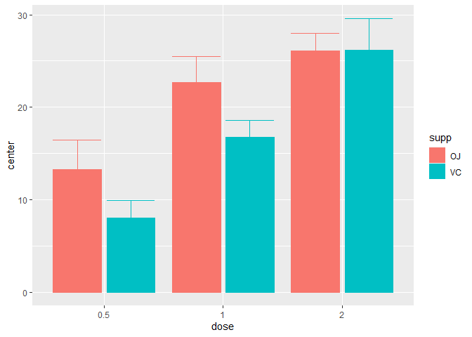
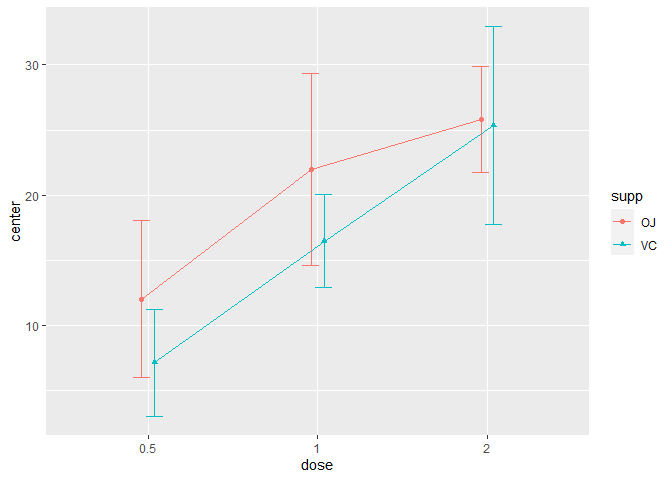
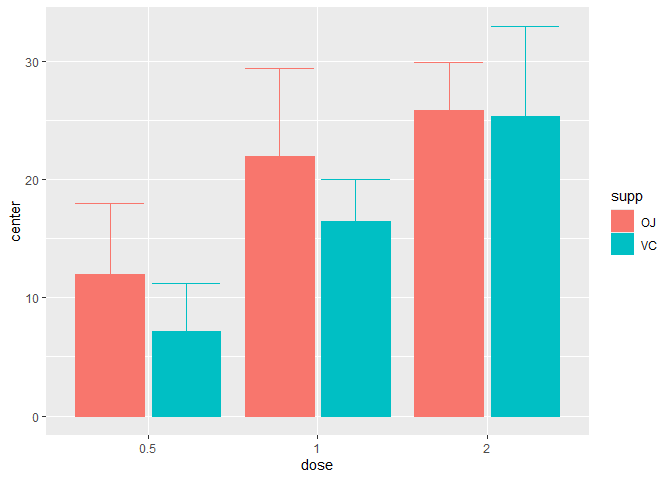
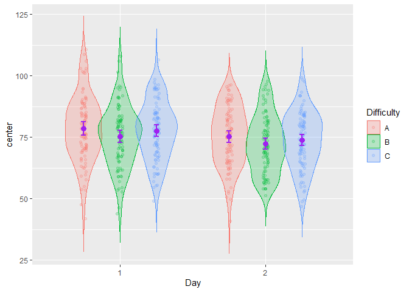

The library superb offers two main functionalities. First, it can be used to obtain plots with adjusted error bars. The main function is superbPlot() but you can also use superbShiny() for a graphical user interface requiring no programming nor scripting.
The purpose of superbPlot() is to provide a plot with summary statistics and correct error bars. With simple adjustments, the error bar are adjusted to the design (within or between), to the purpose (single or pair-wise differences), to the sampling method (simple randomized samples or cluster randomized samples) and to the population size (infinite or of a specific size). The superbData() function does not generate the plot but returns the summary statistics and the interval boundaries. These can afterwards be sent to other plotting environment.
The second functionality is to generate random datasets. The function GRD() is used to easily generate random data from any design (within or between) using any population distribution with any parameters, and with various effect sizes. GRD() is useful to test statistical procedures and plotting procedures such as superbPlot().
Installation
The official CRAN version can be installed with
install.packages("superb")
library(superb)The development version can be accessed through GitHub:
devtools::install_github("dcousin3/superb")
library(superb)Examples
The easiest is to use the graphical interface which can be launched with
The following examples use the script-based commands.
Here is a simple example illustrating the ToothGrowth dataset of rats (in which the dependent variable is len) as a function of the dose of vitamin and the form of the vitamin supplements supp (pills or juice)
superbPlot(ToothGrowth,
BSFactors = c("dose","supp"),
variables = "len" )
In the above, the default summary statistic, the mean, is used. The error bars are, by default, the 95% confidence intervals. These two choices can be changed with the statistic and the errorbar arguments.
This second example explicitly indicates to display the median instead of the default mean summary statistics
superbPlot(ToothGrowth,
BSFactors = c("dose","supp"),
variables = "len",
statistic = "median")
As a third example, we illustrate the harmonic means hmedian along with 99.9% confidence intervals using lines:
superbPlot(ToothGrowth,
BSFactors = c("dose","supp"),
variables = "len",
statistic = "hmean",
errorbar = "CI", gamma = 0.999,
plotStyle = "line")
The second function, GRD(), can be used to generate random data from designs with various within- and between-subject factors. This example generates scores for 300 simulated participants in a 3 x 2 design with repeated-measures on Days. Only the factor Day is simulated to improve the scores by reducing it:
testdata <- GRD(
RenameDV = "score",
SubjectsPerGroup = 100,
BSFactors = "Difficulty(A,B,C)",
WSFactors = "Day(2)",
Population = list(mean = 75,stddev = 12,rho = 0.5),
Effects = list("Day" = slope(-3) )
)
head(testdata)## id Difficulty score.1 score.2
## 1 1 A 87.50433 102.15152
## 2 2 A 60.07547 51.97630
## 3 3 A 75.34846 59.80454
## 4 4 A 60.93139 55.34069
## 5 5 A 81.91479 86.32453
## 6 6 A 83.31082 84.09887The simulated scores are illustrated using using a more elaborated layout, the pointjitterviolin which, in addition to the mean and confidence interval, shows the raw data using jitter dots and the distribution using a violin plot:
superbPlot(testdata,
BSFactors = "Difficulty",
WSFactors = "Day(2)",
variables = c("score.1","score.2"),
plotStyle = "pointjitterviolin",
errorbarParams = list(color = "purple"),
pointParams = list( size = 3, color = "purple")
)
In the above example, optional arguments errorbarParams and pointParams are used to inject specifications in the error bars and the points respectively. When these arguments are used, they override the defaults from superbPlot().
For more
As seen, the library superb makes it easy to illustrate summary statistics along with the error bars. Some layouts can be used to visualize additional characteristics of the raw data. Finally, the resulting appearance can be customized in various ways.
The complete documentation is available on this site.
A general introduction to the superb framework underlying this library is in press at Advances in Methods and Practices in Psychological Sciences (Cousineau, Goulet, & Harding, in press).
References
Cousineau D, Goulet M, Harding B (2021). “Summary plots with adjusted error bars: The superb framework with an implementation in R.” Advances in Methods and Practices in Psychological Science, 2021, 1–46. doi: https://doi.org/10.1177/25152459211035109
Walker, J. A. L. (2021). “Summary plots with adjusted error bars (superb).” Youtube video, accessible here).